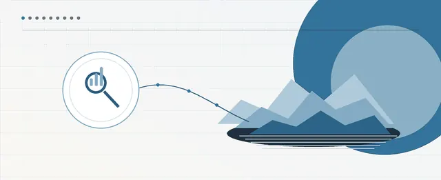
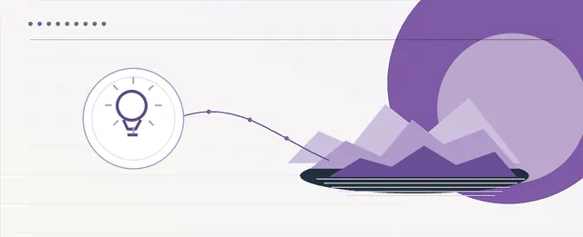
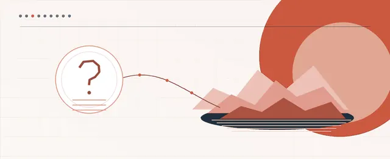
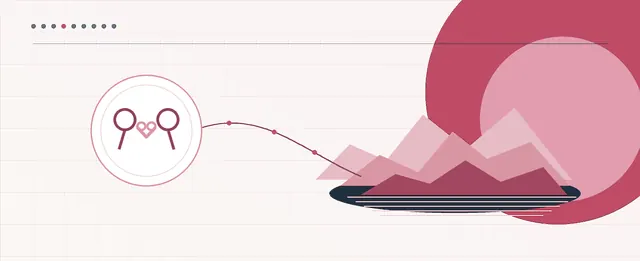
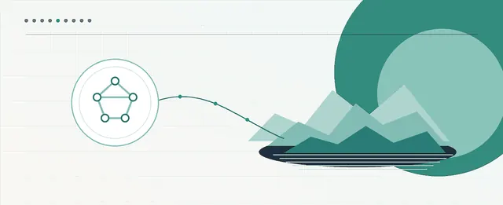
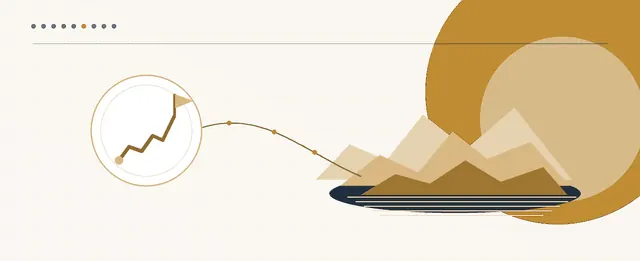
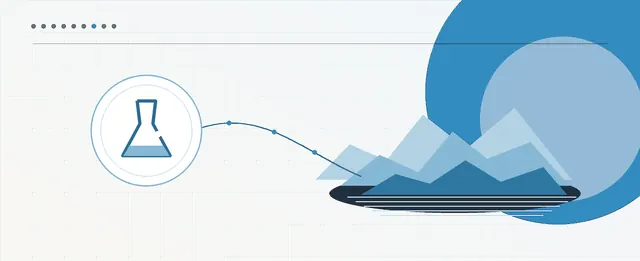
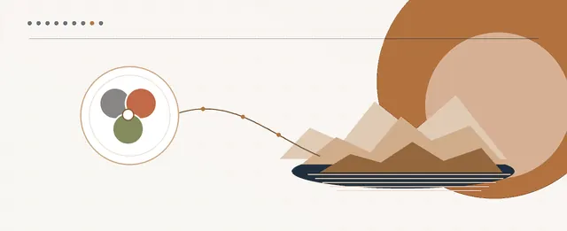
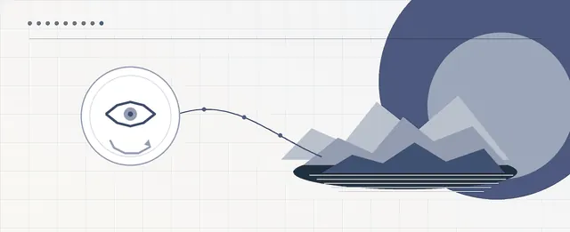

What the book is
A practice-oriented educational framework for observing, choosing, and combining different ways of thinking. The nine-island model is an authored, practical map — not a final classification and not a personality test.

جزیرههای ذهن تو — ۹ لنز فکری برای تصمیمهای بهتر، رابطههای سالمتر و زندگی آگاهانهتر
Nine thinking lenses for better decisions, healthier relationships, and a more conscious life
Ready for publication and print
A practice-oriented educational framework for observing, choosing, and combining different ways of thinking. The nine-island model is an authored, practical map — not a final classification and not a personality test.
The exercises are not a tool for diagnosing psychological disorders and do not replace psychotherapy or medical, legal, or financial advice. In high-risk or crisis situations, professional help is essential.
Each chapter is one island: a lens that sees one kind of question better than the others.

Analytical thinking: turning ambiguity into a problem, a hypothesis, and a measurable action

Creative thinking: widening options and building new, useful, testable solutions

Critical thinking: weighing claims, evidence, and degree of confidence

Empathic thinking: understanding another person's experience without dropping reality, responsibility, or boundaries

Systems thinking: seeing the patterns, loops, and structures that reproduce a problem

Strategic thinking: choosing a path, building focus, and learning under uncertainty

Experimental and scientific thinking: turning guesses into tests, measurement, and reliable learning

Integrative thinking: choosing, sequencing, and coordinating lenses for complex problems

Reflective thinking: monitoring your thinking, calibration, and learning from experience
From the introduction — original Persian text, with an English translation below.
ساعت ۰۰:۱۲ است. فردا ساعت ۹ باید ارائه بدهی و نیمی از اسلایدها هنوز آماده نیستند. گوشی را فقط برای «پنج دقیقه» برمیداری. یک ویدئو، بعد یکی دیگر. وقتی دوباره به ساعت نگاه میکنی، ۰۰:۵۲ است. در چهل دقیقه، نه استراحت کردهای و نه جلو افتادهای؛ فقط اضطراب بیشتری خریدهای. ذهن هم بیدرنگ حکم میدهد: «باز خرابش کردم.»
مسئله کمبود فکر نیست. ممکن است زیاد هم فکر کنی و باز در همان الگو بیفتی. سؤال این کتاب سادهتر و سختتر است: «در این لحظه، ذهن من از کدام مسیر رفت—و چه لنزی میتوانست چیزی را نشان بدهد که ندیدم؟»
ذهن را مثل مجمعالجزایری تصور کن که هر جزیره یک سؤال را بهتر میبیند. تحلیلگر میپرسد «شاهد چیست؟»؛ همدل میپرسد «این تصمیم برای آدمها چه معنایی دارد؟»؛ استراتژیست میپرسد «اگر امروز این را انتخاب کنم، فردا چه گزینههایی باز یا بسته میشوند؟» نقشه، خودِ واقعیت نیست؛ فقط یادآوری میکند چه وقت باید منظره را عوض کنی.
It is 00:12. Tomorrow at 9 you have to present, and half the slides are not ready. You pick up your phone for just “five minutes”. One video, then another. When you look at the clock again, it is 00:52. In forty minutes you have neither rested nor moved forward; you have only bought more anxiety. And the mind immediately rules: “I ruined it again.”
The problem is not a shortage of thinking. You may think a lot and still fall into the same pattern. The question of this book is simpler and harder: “At this moment, which path did my mind take — and which lens could have shown me something I did not see?”
Imagine the mind as an archipelago in which each island sees one question better. The analyst asks “What is the evidence?”; the empath asks “What does this decision mean for people?”; the strategist asks “If I choose this today, which options open or close tomorrow?” The map is not reality itself; it only reminds you when to change the view.
Selected illustrations and infographics from the manuscript. Click an image to enlarge.
The examples without a source are composite teaching scenarios, and the numbers in them are not real research or company data unless a source is given.
Page numbers of the print layout (A5).